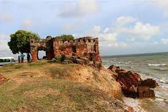

Nallur Kandaswamy Kovil

Nallur Kandaswamy Kovil is a significant Hindu temple, located in Nallur, Northern Province, Sri Lanka. The presiding deity is Lord Murugan in the form of the holy 'Vel' in the Sanctum, the primary shrine, and in other forms, namely, Shanmugar, Muthukumaraswami, Valli Kaanthar with consorts Valli and Deivayanai, and Thandayuthapani, sans consorts in secondary shrines in the temple.
Fort Jaffna

Jaffna Fort is a fort built by the Portuguese at Jaffna, Sri Lanka in 1618 under Phillippe de Oliveira following the Portuguese invasion of Jaffna. The fort is located near the coastal village of Gurunagar. Due to numerous miracles attributed to the statue of Virgin Mary in the church nearby, the fort was named as Fortress of Our Lady of Miracles of Jafanapatão. It was captured by the Dutch under Rijcklof van Goens in 1658 who expanded it. In 1795, it was taken over by the British, and remained under the control of a British garrison till 1948. As the only large military fort in the country, due to the presence of only government and military buildings within its ramparts, it was garrisoned by a detachment of the Ceylon Army. With the onset of the Sri Lankan Civil War it came under siege on several occasions and was the scene of pitched battles. From 1985 to 1995 it was under the control of the LTTE during this time the LTTE destroyed several of key features to stop the Army getting control due to the site being used to stage attacks but it was recaptured by the Sri Lanka Army in 1995 after a 50-day siege during Operation Riviresa.
Chundikulam National Park

Chundikkulam National Park is a national park in northern Sri Lanka, approximately 12 km north east of Kilinochchi.
Arippu Dutch Fort
Arippu Fort was built by the Portuguese and was handed over to the Dutch in 1658. The small bastion fort is located in Arippu, which is 16 km away from Mannar Island. The fort is nearly square in shape, with two bastions. Robert Knox, English sea captain and famous British prisoner of the Kandyan King Rajasinghe II, and his companion escaped after nineteen years of captivity and reached the Arippu Fort in 1679. The first British Governor of Ceylon, Frederick North, constructed his official summer residence at the beach front, now known as The Doric and converted the fort into accommodation for the officers, who operated the pearl fisheries in the area. The fort building was subsequently converted to a guest house but was abandoned when the civil war spread to the area.
Ram Setu Marine National Park

Adam's Bridge Marine National Park is a national park surrounding Adam's Bridge in northern Sri Lanka, approximately 30 km north west of Mannar.